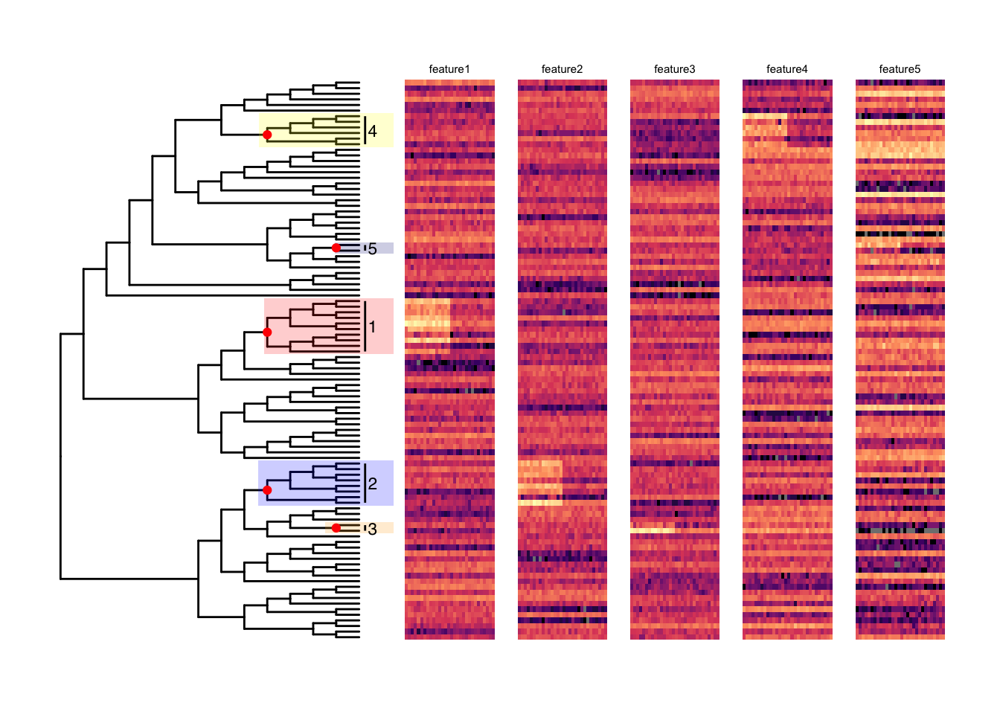
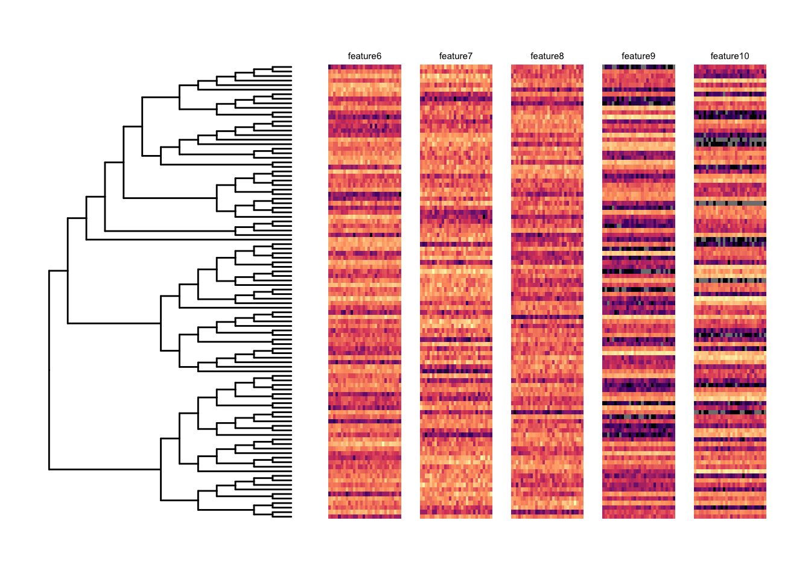

Last updated: 2021-09-18
Checks: 6 1
Knit directory: DS/
This reproducible R Markdown analysis was created with workflowr (version 1.6.2). The Checks tab describes the reproducibility checks that were applied when the results were created. The Past versions tab lists the development history.
The R Markdown is untracked by Git. To know which version of the R Markdown file created these results, you’ll want to first commit it to the Git repo. If you’re still working on the analysis, you can ignore this warning. When you’re finished, you can run wflow_publish to commit the R Markdown file and build the HTML.
Great job! The global environment was empty. Objects defined in the global environment can affect the analysis in your R Markdown file in unknown ways. For reproduciblity it’s best to always run the code in an empty environment.
The command set.seed(20210918) was run prior to running the code in the R Markdown file. Setting a seed ensures that any results that rely on randomness, e.g. subsampling or permutations, are reproducible.
Great job! Recording the operating system, R version, and package versions is critical for reproducibility.
Nice! There were no cached chunks for this analysis, so you can be confident that you successfully produced the results during this run.
Great job! Using relative paths to the files within your workflowr project makes it easier to run your code on other machines.
Great! You are using Git for version control. Tracking code development and connecting the code version to the results is critical for reproducibility.
The results in this page were generated with repository version baf3539. See the Past versions tab to see a history of the changes made to the R Markdown and HTML files.
Note that you need to be careful to ensure that all relevant files for the analysis have been committed to Git prior to generating the results (you can use wflow_publish or wflow_git_commit). workflowr only checks the R Markdown file, but you know if there are other scripts or data files that it depends on. Below is the status of the Git repository when the results were generated:
Ignored files:
Ignored: .Rhistory
Ignored: .Rproj.user/
Untracked files:
Untracked: analysis/DS_toy.Rmd
Note that any generated files, e.g. HTML, png, CSS, etc., are not included in this status report because it is ok for generated content to have uncommitted changes.
There are no past versions. Publish this analysis with wflow_publish() to start tracking its development.
suppressPackageStartupMessages({
library(TreeSummarizedExperiment)
library(ggtree)
library(ape)
library(treeclimbR)
library(TreeHeatmap)
library(ggnewscale)
library(ggplot2)
}) This a toy example to help understand how treeclimbR works on the DS case where each entity (e.g., cell subpopulation in scRNA-seq data) has multiple features (e.g., genes). The main difference in data structure between the DA and the DS case is in the number of features that need to be taken into account in the FDR control.
# Generate a random tree
set.seed(1)
n <- 100
tree <- rtree(n)
# Add labels on nodes
tree <- addLabel(tree = tree,
label = c(paste0("L", seq_len(n)), paste0("N", seq_len(n-1))),
on = "all")Simulate counts of 10 features for 100 entities in 30 samples. 15 samples in group A, the other 15 samples in group B.
# The proportions of features
pfun <- function(n, shape1 = 2, shape2 = 3) {
p <- rbeta(n = n, shape1 = shape1, shape2 = shape2)
p/sum(p)
}
pmat <- rbind(c(2, 3), c(2, 2), c(3, 5), c(2, 5), c(1, 4),
c(3, 4), c(3, 2), c(4, 3), c(1, 5), c(1, 3))
rownames(pmat) <- paste0("gene", 1:10)
plist <- apply(pmat, 1, FUN = function(x){
pfun(n = 100, shape1 = x[1], shape2 = x[2])
})
# Generate counts of features
## Create samples for two groups, each group having m samples
m <- 15
countList <- lapply(seq_len(ncol(plist)), FUN = function(x){
xx <- rmultinom(n = m*2, size = 2000, prob = plist[, x])
rownames(xx) <- paste0("L", 1:100)
colnames(xx) <- paste0(rep(LETTERS[1:2], each = m), c(1:m, 1:m))
return(xx)
})
# randomly select 5 internal nodes in the tree
intNode <- setdiff(showNode(tree, only.leaf = FALSE),
showNode(tree, only.leaf = TRUE))
nd <- sample(x = intNode, size = 5, replace = FALSE)
names(nd) <- paste0("feature", 1:5)
# For descendant leaves of the selected nodes:
# - Multiply their counts in the first group by a value fc
sigList <- findDescendant(tree = tree, node = nd)
sigList <- lapply(sigList, convertNode, tree = tree)
fc <- 3
for (i in seq_along(sigList)) {
countList[[i]][sigList[[i]], 1:m] <- countList[[i]][sigList[[i]], 1:m] * fc
}
names(countList) <- paste0("feature", 1:10)sampInfo <- data.frame(group = rep(LETTERS[1:2], each = m))
lse <- TreeSummarizedExperiment(assays = countList, rowTree = tree,
colData = sampInfo)
lseclass: TreeSummarizedExperiment
dim: 100 30
metadata(0):
assays(10): feature1 feature2 ... feature9 feature10
rownames(100): L1 L2 ... L99 L100
rowData names(0):
colnames(30): A1 A2 ... B14 B15
colData names(1): group
reducedDimNames(0):
mainExpName: NULL
altExpNames(0):
rowLinks: a LinkDataFrame (100 rows)
rowTree: 1 phylo tree(s) (100 leaves)
colLinks: NULL
colTree: NULLall_node <- showNode(tree = tree, only.leaf = FALSE)
tse <- aggTSE(x = lse, rowLevel = all_node, rowFun = sum, whichAssay = 1:10)
rownames(tse) <- convertNode(tree = rowTree(tse), node = rowLinks(tse)$nodeNum)
tseclass: TreeSummarizedExperiment
dim: 199 30
metadata(0):
assays(10): feature1 feature2 ... feature9 feature10
rownames(199): L1 L2 ... N98 N99
rowData names(0):
colnames(30): A1 A2 ... B14 B15
colData names(1): group
reducedDimNames(0):
mainExpName: NULL
altExpNames(0):
rowLinks: a LinkDataFrame (199 rows)
rowTree: 1 phylo tree(s) (100 leaves)
colLinks: NULL
colTree: NULLOnly five features (features 1-5) have signals. Each feature has one signal branch with branch 1-5 for features 1-5 correspondingly. The five signal branches are randomly selected and vary in branch sizes. Heatmaps are simulated counts of features in 30 samples that belong to two different groups. Samples are in columns. The first 15 samples belong to the group A, and the rest belong to the group B.
ggtree(tree, branch.length = "none") +
geom_hilight(node = nd[1], fill = "red", alpha = 0.2, extend = 1.5) +
geom_hilight(node = nd[2], fill = "blue", alpha = 0.2, extend = 1.5) +
geom_hilight(node = nd[3], fill = "orange", alpha = 0.2, extend = 1.5) +
geom_hilight(node = nd[4], fill = "yellow", alpha = 0.2, extend = 1.5) +
geom_hilight(node = nd[5], fill = "navy", alpha = 0.2, extend = 1.5) +
geom_cladelab(node = nd[1], label = "1", fill = "red", fontsize = 3) +
geom_cladelab(node = nd[2], label = "2", fill = "red", fontsize = 3) +
geom_cladelab(node = nd[3], label = "3", fill = "red", fontsize = 3) +
geom_cladelab(node = nd[4], label = "4", fill = "red", fontsize = 3) +
geom_cladelab(node = nd[5], label = "5", fill = "red", fontsize = 3) +
geom_point2(aes(subset = node %in% c(nd)), color = "red") +
geom_th_heatmap(name = "feature1", th_data = log10(assays(lse)[[1]]), rel_width = 0.3, gap = 2) +
geom_th_title(name = "feature1", side = "top", label = "feature1", size = 2, nudge_y = 1) +
scale_fill_viridis_c(option = "A") +
new_scale_fill() +
geom_th_heatmap(name = "feature2", th_data = log10(assays(lse)[[2]]), rel_width = 0.3) +
geom_th_title(name = "feature2", side = "top", label = "feature2", size = 2, nudge_y = 1) +
scale_fill_viridis_c(option = "A") +
new_scale_fill() +
geom_th_heatmap(name = "feature3", th_data = log10(assays(lse)[[3]]), rel_width = 0.3) +
geom_th_title(name = "feature3", side = "top", label = "feature3", size = 2, nudge_y = 1) +
scale_fill_viridis_c(option = "A") +
new_scale_fill() +
geom_th_heatmap(name = "feature4", th_data = log10(assays(lse)[[4]]), rel_width = 0.3) +
geom_th_title(name = "feature4", side = "top", label = "feature4", size = 2, nudge_y = 1) +
scale_fill_viridis_c(option = "A") +
new_scale_fill() +
geom_th_heatmap(name = "feature5", th_data = log10(assays(lse)[[5]]), rel_width = 0.3) +
geom_th_title(name = "feature5", side = "top", label = "feature5", size = 2, nudge_y = 1) +
scale_fill_viridis_c(option = "A") +
theme(legend.position = "none") +
scale_y_continuous(expand = c(0.1, 0.1))
Features 6-10 have no signal.
ggtree(tree, branch.length = "none") +
geom_th_heatmap(name = "feature6", th_data = log10(assays(lse)[[6]]), rel_width = 0.3, gap = 2) +
geom_th_title(name = "feature6", side = "top", label = "feature6", size = 2, nudge_y = 1) +
scale_fill_viridis_c(option = "A") +
new_scale_fill() +
geom_th_heatmap(name = "feature7", th_data = log10(assays(lse)[[7]]), rel_width = 0.3) +
geom_th_title(name = "feature7", side = "top", label = "feature7", size = 2, nudge_y = 1) +
scale_fill_viridis_c(option = "A") +
new_scale_fill() +
geom_th_heatmap(name = "feature8", th_data = log10(assays(lse)[[8]]), rel_width = 0.3) +
geom_th_title(name = "feature8", side = "top", label = "feature8", size = 2, nudge_y = 1) +
scale_fill_viridis_c(option = "A") +
new_scale_fill() +
geom_th_heatmap(name = "feature9", th_data = log10(assays(lse)[[9]]), rel_width = 0.3) +
geom_th_title(name = "feature9", side = "top", label = "feature9", size = 2, nudge_y = 1) +
scale_fill_viridis_c(option = "A") +
new_scale_fill() +
geom_th_heatmap(name = "feature10", th_data = log10(assays(lse)[[10]]), rel_width = 0.3) +
geom_th_title(name = "feature10", side = "top", label = "feature10", size = 2, nudge_y = 1) +
scale_fill_viridis_c(option = "A") +
theme(legend.position = "none") +
scale_y_continuous(expand = c(0.1, 0.1))
The non-parametric method, Wilcoxon sum rank test, is performed to obtain P values and directions for all features on each node of the tree.
# a function to run the wilcox.test
test.func <- function(X, Y) {
Y <- as.numeric(factor(Y))
obj <- apply(X, 1, function(x) {
p.value <- suppressWarnings(wilcox.test(x ~ Y)$p.value)
p.value[is.na(p.value)] <- 1
e.sign <- sign(mean(x[Y == 2]) - mean(x[Y == 1]))
c(p.value, e.sign)
})
df <- data.frame(node = rowLinks(tse)$nodeNum,
pvalue = obj[1, ],
sign = obj[2, ])
return(df)
}outW is a list of 10 data frame, each of which is the differential analysis result of a feature.
# run differential analysis for all features
Y <- colData(tse)$group
XList <- assays(tse)
outW <- lapply(1:10, FUN = function(i){
df <- test.func(X = XList[[i]], Y = Y)
df$feature <- names(XList)[i]
return(df)
})
names(outW) <- names(XList)
head(outW$feature1) node pvalue sign feature
alias_1 1 0.6742060 1 feature1
alias_2 2 0.6327577 -1 feature1
alias_3 3 0.5603110 -1 feature1
alias_4 4 0.2436940 -1 feature1
alias_5 5 0.4274949 1 feature1
alias_6 6 0.2359014 1 feature1Candidates are proposed separately for each feature.
cand <- lapply(outW, FUN = function(x) {
getCand(tree = tree, score_data = x, node_column = "node",
p_column = "pvalue", sign_column = "sign", message = FALSE) })
# 10 features
names(cand) [1] "feature1" "feature2" "feature3" "feature4" "feature5" "feature6"
[7] "feature7" "feature8" "feature9" "feature10"# candidates for feature 1 at specific t values
names(cand$feature1$candidate_list) [1] "0" "0.01" "0.02" "0.03" "0.04" "0.05" "0.1" "0.15" "0.2" "0.25"
[11] "0.3" "0.35" "0.4" "0.45" "0.5" "0.55" "0.6" "0.65" "0.7" "0.75"
[21] "0.8" "0.85" "0.9" "0.95" "1" Candidate proposed for different features are different at the same t if the signal patterns of features differ. The candidate proposed for features 6-10 that have no signal is the leaf level (the tree has 100 leaves).
# The number of nodes in a candidate generated at t = 0.3 for different features
sapply(cand, FUN = function(x){length(x$candidate_list[["0.3"]])}) feature1 feature2 feature3 feature4 feature5 feature6 feature7 feature8
91 92 99 94 99 100 100 100
feature9 feature10
100 100 cand_list <- lapply(cand, FUN = function(x){x$candidate_list})
res <- evalCand(tree = tree, type = "multiple",
levels = cand_list, score_data = outW,
node_column = "node", p_column = "pvalue", sign_column = "sign",
feature_column = "feature")In the simulation step, signals were created on different internal nodes for different features (nd). Signal nodes identified by treeclimbR are in found. Results are the numeric ID of signal nodes. treeclimbR has perfectly identified those signal nodes for features 1-5 in this toy example.
out <- res$output
# results of treeclimbR
(found <- setNames(out[out$signal.node, ]$node,
out[out$signal.node, ]$feature))feature1 feature2 feature3 feature4 feature5
147 186 185 118 132 # the truth
ndfeature1 feature2 feature3 feature4 feature5
147 186 185 118 132 There are 7 elements in the result list res.
names(res)[1] "candidate_best" "output" "candidate_list" "level_info"
[5] "FDR" "method" "column_info" The best candidate levels picked for the first five features are different because we have assigned signals on different nodes. There are no signal for the last five features, so their best candidate levels are all on the leaf level (node ID: 1-100).
res$candidate_best$feature1
[1] 1 2 3 4 5 6 7 8 9 10 11 12 13 14 15 16 17 18 19
[20] 20 21 22 23 24 25 26 27 28 29 30 31 32 33 34 35 36 37 38
[39] 39 40 41 42 43 44 55 56 57 58 59 60 61 62 63 64 65 66 67
[58] 68 69 70 71 72 73 74 75 76 77 78 79 80 81 82 83 84 85 86
[77] 87 88 89 90 91 92 93 94 95 96 97 98 99 100 147
$feature2
[1] 1 2 3 4 5 6 7 8 9 10 11 12 13 14 15 16 17 18 19
[20] 20 21 22 23 24 25 26 27 28 29 30 31 32 33 34 35 36 37 38
[39] 39 40 41 42 43 44 45 46 47 48 49 50 51 52 53 54 55 56 57
[58] 58 59 60 61 62 63 64 65 66 67 68 69 70 71 72 73 74 75 76
[77] 77 78 79 80 81 82 83 84 93 94 95 96 97 98 99 100 186
$feature3
[1] 1 2 3 4 5 6 7 8 9 10 11 12 13 14 15 16 17 18 19
[20] 20 21 22 23 24 25 26 27 28 29 30 31 32 33 34 35 36 37 38
[39] 39 40 41 42 43 44 45 46 47 48 49 50 51 52 53 54 55 56 57
[58] 58 59 60 61 62 63 64 65 66 67 68 69 70 71 72 73 74 75 76
[77] 77 78 79 80 81 82 85 86 87 88 89 90 91 92 93 94 95 96 97
[96] 98 99 100 185
$feature4
[1] 1 2 3 4 5 6 7 8 9 10 11 12 19 20 21 22 23 24 25
[20] 26 27 28 29 30 31 32 33 34 35 36 37 38 39 40 41 42 43 44
[39] 45 46 47 48 49 50 51 52 53 54 55 56 57 58 59 60 61 62 63
[58] 64 65 66 67 68 69 70 71 72 73 74 75 76 77 78 79 80 81 82
[77] 83 84 85 86 87 88 89 90 91 92 93 94 95 96 97 98 99 100 118
$feature5
[1] 1 2 3 4 5 6 7 8 9 10 11 12 13 14 15 16 17 18 19
[20] 20 21 22 23 24 25 26 27 30 31 32 33 34 35 36 37 38 39 40
[39] 41 42 43 44 45 46 47 48 49 50 51 52 53 54 55 56 57 58 59
[58] 60 61 62 63 64 65 66 67 68 69 70 71 72 73 74 75 76 77 78
[77] 79 80 81 82 83 84 85 86 87 88 89 90 91 92 93 94 95 96 97
[96] 98 99 100 132
$feature6
[1] 1 2 3 4 5 6 7 8 9 10 11 12 13 14 15 16 17 18
[19] 19 20 21 22 23 24 25 26 27 28 29 30 31 32 33 34 35 36
[37] 37 38 39 40 41 42 43 44 45 46 47 48 49 50 51 52 53 54
[55] 55 56 57 58 59 60 61 62 63 64 65 66 67 68 69 70 71 72
[73] 73 74 75 76 77 78 79 80 81 82 83 84 85 86 87 88 89 90
[91] 91 92 93 94 95 96 97 98 99 100
$feature7
[1] 1 2 3 4 5 6 7 8 9 10 11 12 13 14 15 16 17 18
[19] 19 20 21 22 23 24 25 26 27 28 29 30 31 32 33 34 35 36
[37] 37 38 39 40 41 42 43 44 45 46 47 48 49 50 51 52 53 54
[55] 55 56 57 58 59 60 61 62 63 64 65 66 67 68 69 70 71 72
[73] 73 74 75 76 77 78 79 80 81 82 83 84 85 86 87 88 89 90
[91] 91 92 93 94 95 96 97 98 99 100
$feature8
[1] 1 2 3 4 5 6 7 8 9 10 11 12 13 14 15 16 17 18
[19] 19 20 21 22 23 24 25 26 27 28 29 30 31 32 33 34 35 36
[37] 37 38 39 40 41 42 43 44 45 46 47 48 49 50 51 52 53 54
[55] 55 56 57 58 59 60 61 62 63 64 65 66 67 68 69 70 71 72
[73] 73 74 75 76 77 78 79 80 81 82 83 84 85 86 87 88 89 90
[91] 91 92 93 94 95 96 97 98 99 100
$feature9
[1] 1 2 3 4 5 6 7 8 9 10 11 12 13 14 15 16 17 18
[19] 19 20 21 22 23 24 25 26 27 28 29 30 31 32 33 34 35 36
[37] 37 38 39 40 41 42 43 44 45 46 47 48 49 50 51 52 53 54
[55] 55 56 57 58 59 60 61 62 63 64 65 66 67 68 69 70 71 72
[73] 73 74 75 76 77 78 79 80 81 82 83 84 85 86 87 88 89 90
[91] 91 92 93 94 95 96 97 98 99 100
$feature10
[1] 1 2 3 4 5 6 7 8 9 10 11 12 13 14 15 16 17 18
[19] 19 20 21 22 23 24 25 26 27 28 29 30 31 32 33 34 35 36
[37] 37 38 39 40 41 42 43 44 45 46 47 48 49 50 51 52 53 54
[55] 55 56 57 58 59 60 61 62 63 64 65 66 67 68 69 70 71 72
[73] 73 74 75 76 77 78 79 80 81 82 83 84 85 86 87 88 89 90
[91] 91 92 93 94 95 96 97 98 99 100There are two options type = single and type = multiple for evalCand. When type = multiple is used, the output table has one more column feature.
out <- res$output
head(out) node pvalue sign feature adj.p signal.node
1: 1 0.6742060 1 feature1 0.9909277 FALSE
2: 2 0.6327577 -1 feature1 0.9909277 FALSE
3: 3 0.5603110 -1 feature1 0.9909277 FALSE
4: 4 0.2436940 -1 feature1 0.9909277 FALSE
5: 5 0.4274949 1 feature1 0.9909277 FALSE
6: 6 0.2359014 1 feature1 0.9909277 FALSESignal nodes are found for different features.
out[out$signal.node, ] node pvalue sign feature adj.p signal.node
1: 147 3.383339e-06 -1 feature1 0.0006611045 TRUE
2: 186 3.357998e-06 -1 feature2 0.0006611045 TRUE
3: 185 3.341192e-06 -1 feature3 0.0006611045 TRUE
4: 118 3.349586e-06 -1 feature4 0.0006611045 TRUE
5: 132 3.282914e-06 -1 feature5 0.0006611045 TRUECandidates proposed for different features at different t values are available in the candidate_list
names(res$candidate_list) [1] "feature1" "feature2" "feature3" "feature4" "feature5" "feature6"
[7] "feature7" "feature8" "feature9" "feature10"names(res$candidate_list$feature1) [1] "0" "0.01" "0.02" "0.03" "0.04" "0.05" "0.1" "0.15" "0.2" "0.25"
[11] "0.3" "0.35" "0.4" "0.45" "0.5" "0.55" "0.6" "0.65" "0.7" "0.75"
[21] "0.8" "0.85" "0.9" "0.95" "1" res$FDR[1] 0.05res$method[1] "BH"res$column_info$node_column
[1] "node"
$p_column
[1] "pvalue"
$sign_column
[1] "sign"
$feature_column
[1] "feature"
sessionInfo()R version 4.1.0 (2021-05-18)
Platform: x86_64-apple-darwin17.0 (64-bit)
Running under: macOS Catalina 10.15.7
Matrix products: default
BLAS: /Library/Frameworks/R.framework/Versions/4.1/Resources/lib/libRblas.dylib
LAPACK: /Library/Frameworks/R.framework/Versions/4.1/Resources/lib/libRlapack.dylib
locale:
[1] en_US.UTF-8/en_US.UTF-8/en_US.UTF-8/C/en_US.UTF-8/en_US.UTF-8
attached base packages:
[1] parallel stats4 stats graphics grDevices utils datasets
[8] methods base
other attached packages:
[1] ggplot2_3.3.5 ggnewscale_0.4.5
[3] TreeHeatmap_0.1.0 treeclimbR_0.1.4
[5] ape_5.5 ggtree_3.0.4
[7] TreeSummarizedExperiment_2.1.3 Biostrings_2.60.2
[9] XVector_0.32.0 SingleCellExperiment_1.14.1
[11] SummarizedExperiment_1.22.0 Biobase_2.52.0
[13] GenomicRanges_1.44.0 GenomeInfoDb_1.28.4
[15] IRanges_2.26.0 S4Vectors_0.30.0
[17] BiocGenerics_0.38.0 MatrixGenerics_1.4.3
[19] matrixStats_0.60.1
loaded via a namespace (and not attached):
[1] utf8_1.2.2 tidyselect_1.1.1
[3] lme4_1.1-27.1 grid_4.1.0
[5] BiocParallel_1.26.2 Rtsne_0.15
[7] aws.signature_0.6.0 flowCore_2.4.0
[9] munsell_0.5.0 codetools_0.2-18
[11] withr_2.4.2 colorspace_2.0-2
[13] highr_0.9 dirmult_0.1.3-4
[15] knitr_1.34 ggsignif_0.6.3
[17] labeling_0.4.2 git2r_0.28.0
[19] GenomeInfoDbData_1.2.6 polyclip_1.10-0
[21] farver_2.1.0 pheatmap_1.0.12
[23] flowWorkspace_4.4.0 rprojroot_2.0.2
[25] vctrs_0.3.8 treeio_1.16.2
[27] generics_0.1.0 TH.data_1.0-10
[29] xfun_0.26 R6_2.5.1
[31] doParallel_1.0.16 clue_0.3-59
[33] locfit_1.5-9.4 bitops_1.0-7
[35] gridGraphics_0.5-1 DelayedArray_0.18.0
[37] promises_1.2.0.1 scales_1.1.1
[39] multcomp_1.4-17 gtable_0.3.0
[41] Cairo_1.5-12.2 RProtoBufLib_2.4.0
[43] sandwich_3.0-1 workflowr_1.6.2
[45] rlang_0.4.11 GlobalOptions_0.1.2
[47] splines_4.1.0 rstatix_0.7.0
[49] lazyeval_0.2.2 hexbin_1.28.2
[51] broom_0.7.9 reshape2_1.4.4
[53] yaml_2.2.1 abind_1.4-5
[55] backports_1.2.1 httpuv_1.6.2
[57] RBGL_1.68.0 tools_4.1.0
[59] ggplotify_0.1.0 ellipsis_0.3.2
[61] jquerylib_0.1.4 RColorBrewer_1.1-2
[63] ggdendro_0.1.22 Rcpp_1.0.7
[65] plyr_1.8.6 base64enc_0.1-3
[67] zlibbioc_1.38.0 purrr_0.3.4
[69] RCurl_1.98-1.5 FlowSOM_2.0.0
[71] ggpubr_0.4.0 viridis_0.6.1
[73] GetoptLong_1.0.5 zoo_1.8-9
[75] haven_2.4.3 ggrepel_0.9.1
[77] cluster_2.1.2 colorRamps_2.3
[79] fs_1.5.0 magrittr_2.0.1
[81] ncdfFlow_2.38.0 data.table_1.14.0
[83] scattermore_0.7 openxlsx_4.2.4
[85] circlize_0.4.13 mvtnorm_1.1-2
[87] hms_1.1.0 patchwork_1.1.1
[89] evaluate_0.14 XML_3.99-0.8
[91] rio_0.5.27 jpeg_0.1-9
[93] readxl_1.3.1 gridExtra_2.3
[95] shape_1.4.6 ggcyto_1.20.0
[97] compiler_4.1.0 tibble_3.1.4
[99] crayon_1.4.1 ggpointdensity_0.1.0
[101] minqa_1.2.4 htmltools_0.5.2
[103] ggfun_0.0.3 later_1.3.0
[105] tidyr_1.1.3 aplot_0.1.0
[107] RcppParallel_5.1.4 aws.s3_0.3.21
[109] tweenr_1.0.2 ComplexHeatmap_2.8.0
[111] MASS_7.3-54 boot_1.3-28
[113] Matrix_1.3-4 car_3.0-11
[115] diffcyt_1.12.0 igraph_1.2.6
[117] forcats_0.5.1 pkgconfig_2.0.3
[119] foreign_0.8-81 xml2_1.3.2
[121] foreach_1.5.1 bslib_0.2.5.1
[123] yulab.utils_0.0.2 stringr_1.4.0
[125] digest_0.6.27 ConsensusClusterPlus_1.56.0
[127] graph_1.70.0 rmarkdown_2.10
[129] cellranger_1.1.0 tidytree_0.3.5
[131] edgeR_3.34.1 curl_4.3.2
[133] rjson_0.2.20 nloptr_1.2.2.2
[135] lifecycle_1.0.0 nlme_3.1-152
[137] jsonlite_1.7.2 carData_3.0-4
[139] viridisLite_0.4.0 limma_3.48.3
[141] fansi_0.5.0 pillar_1.6.2
[143] lattice_0.20-44 fastmap_1.1.0
[145] httr_1.4.2 survival_3.2-13
[147] glue_1.4.2 zip_2.2.0
[149] png_0.1-7 iterators_1.0.13
[151] Rgraphviz_2.36.0 ggforce_0.3.3
[153] stringi_1.7.4 sass_0.4.0
[155] CytoML_2.4.0 latticeExtra_0.6-29
[157] dplyr_1.0.7 cytolib_2.4.0